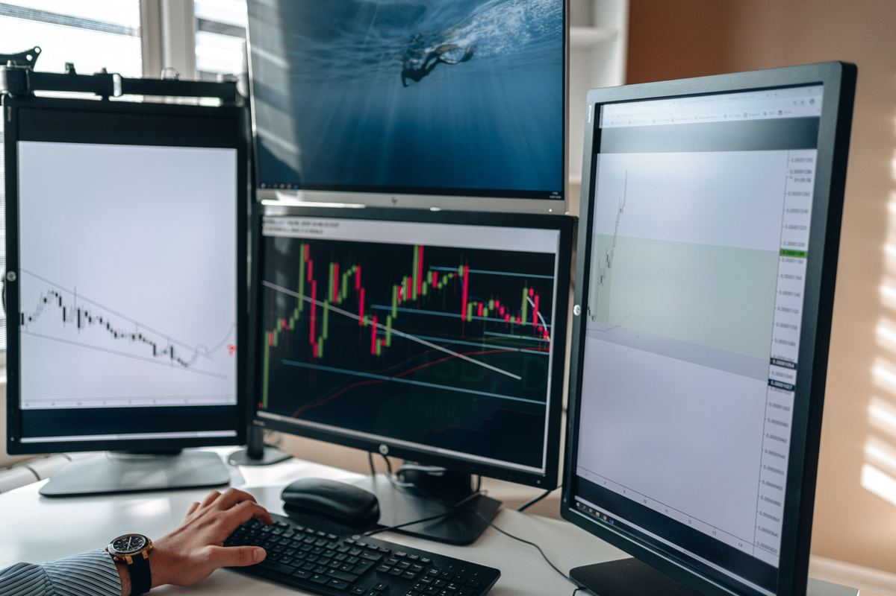

Gold Volatility: What Beginners Must Know

Volatility is gold's defining trait. Understand it and it becomes opportunity; ignore it and it becomes tuition.
How big are the moves?
Gold routinely travels $15–$40 a day — on a 1-lot position, that is $1,500–$4,000 of swing.
Beginners used to EUR/USD's pace are routinely shocked. Always check the average daily range before sizing any gold trade.
Volatility changes
Quiet weeks make traders complacent, then a news event triples the range overnight.
Size for the volatile days, not the calm ones. A position that is 'fine' in calm markets becomes a margin call in wild ones.
Practical volatility rules
Use wider stops than forex (gold hunts tight stops), cut your usual size at least in half to start, and never hold full size into major US data.
The ATR indicator on the daily chart shows the current average range — size from it.
Volatility is neutral
Volatility is not risk — unmanaged exposure to it is.
The same $30 range that stops out gamblers pays disciplined trend-followers. Your job is not to avoid volatility but to size so you can survive it.
Frequently asked questions
What is ATR?
Average True Range — an indicator showing the average recent daily range. A practical volatility gauge.
How small should I start on gold?
Many beginners start at 0.01 lots and stay there for months. There is no prize for sizing up early.
Can volatility be too high to trade?
Yes — during extreme news chaos, standing aside is a valid, professional decision.